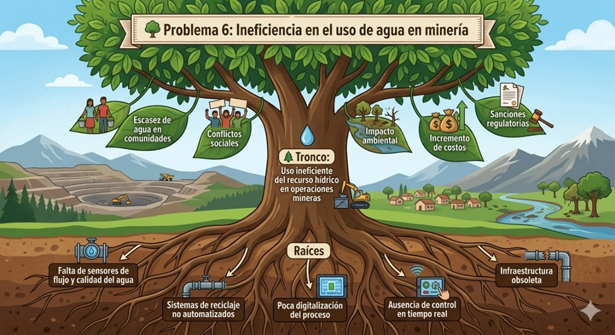
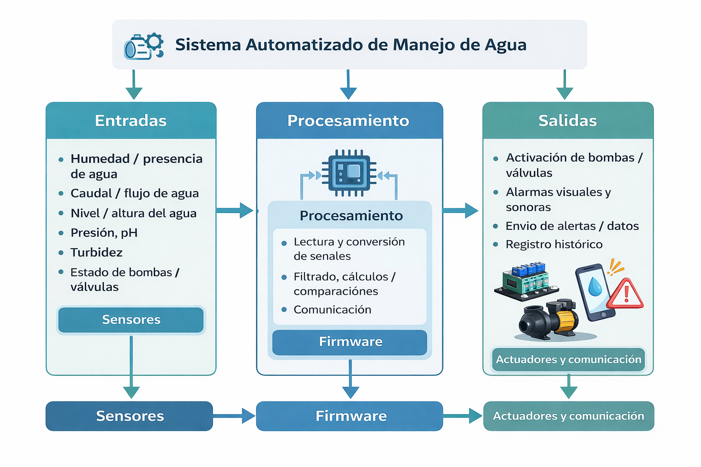

Sector elegido y árbol del problema
El sector elegido es Minería. El problema central del proyecto es la ineficiencia en el uso del agua en minería. A partir del árbol desarrollado, se identifican causas técnicas en las raíces, el problema principal en el tronco y los impactos sociales y ambientales en las ramas.
Raíces: causas técnicas
- Falta de sensores de flujo y calidad del agua.
- Sistemas de reciclaje no automatizados.
- Poca digitalización del proceso.
- Ausencia de control en tiempo real.
- Infraestructura obsoleta.
Ramas: impacto social y ambiental
- Escasez de agua en comunidades.
- Conflictos sociales.
- Impacto ambiental.
- Incremento de costos.
- Sanciones regulatorias.

Reto ético
Si una solución técnica logra resolver el problema del uso ineficiente del agua en minería, pero resulta demasiado costosa para la comunidad o empresa que la necesita, entonces en la práctica el problema no se soluciona realmente. Además, cuando el costo es demasiado alto, se introduce una nueva causa dentro del problema original: la inaccesibilidad económica de la tecnología.
Desde el punto de vista social, esto también genera consecuencias negativas. Solo las grandes empresas podrían acceder a este tipo de soluciones, mientras que pequeñas operaciones o comunidades quedarían excluidas. Esto puede aumentar la desigualdad, generar conflictos sociales y crear desconfianza hacia la tecnología, especialmente si las personas perciben que existen soluciones, pero no están a su alcance.
Requerimientos funcionales: entradas, procesamiento y salidas
Entradas: variables físicas que mide el sistema
En este sistema orientado al uso eficiente del agua en minería, se pueden medir distintas variables físicas y químicas que permiten supervisar el estado del recurso hídrico, la operación de tuberías y tanques, y la calidad del agua reutilizada. Entre las principales variables se encuentran la humedad, el flujo o caudal, la altura o nivel de agua, la presión, el pH, la turbidez y el estado de bombas o válvulas.

| Variable a medir | Sensor posible | Funcionamiento básico | Aplicación en el sistema |
|---|---|---|---|
| Humedad / presencia de agua | Sensor de humedad o sensor de fuga por conductividad | Detecta la presencia de agua porque cambia la conductividad eléctrica entre dos electrodos o superficies sensibles. | Identificar filtraciones, fugas localizadas o acumulación de agua en zonas no deseadas. |
| Caudal o flujo de agua | Caudalímetro / sensor de flujo | Mide la cantidad de agua que circula por una tubería, normalmente contando pulsos generados por una turbina, efecto Hall o tecnología electromagnética. | Controlar consumo, comparar entrada y salida, detectar pérdidas. |
| Nivel o altura del agua en tanques | Sensor ultrasónico, sensor de presión hidrostática o sensor de flotador | El ultrasónico mide la distancia hasta la superficie del agua; el hidrostático mide la presión causada por la columna de agua; el flotador cambia de posición según el nivel. | Monitorear llenado y vaciado de tanques, evitar desbordes o falta de agua. |
| Presión en tuberías | Sensor de presión | Convierte la presión del fluido en una señal eléctrica proporcional. | Verificar estado de la red, detectar caídas anormales y apoyar en la detección de fugas. |
| pH del agua | Sensor o sonda de pH | Mide la actividad de iones de hidrógeno en el agua para determinar si es ácida, neutra o básica. | Evaluar calidad del agua y decidir si puede reutilizarse o necesita tratamiento. |
| Turbidez del agua | Sensor de turbidez óptico | Emite luz a través del agua y mide cuánto se dispersa o se atenúa por la presencia de partículas suspendidas. | Determinar si el agua está limpia o contiene demasiados sólidos para su reutilización. |
| Estado de bombas o válvulas | Sensor de corriente, finales de carrera o sensores de posición | Verifican si la bomba está operando o si una válvula está abierta o cerrada. | Confirmar que las acciones del sistema realmente se ejecutan. |
Procesamiento
En la etapa de procesamiento, el firmware recibe los datos de los sensores y se encarga de analizarlos para tomar decisiones automáticas dentro del sistema. Primero realiza la lectura y conversión de las señales medidas, luego puede aplicar filtrado o promedios para reducir errores o ruido en las mediciones. Después compara los valores obtenidos con umbrales establecidos, por ejemplo, niveles máximos y mínimos de agua, rangos aceptables de pH o límites de turbidez.
A partir de estas comparaciones, el sistema puede detectar anomalías como fugas, sobreconsumo, baja eficiencia de recirculación o mala calidad del agua. Además, el firmware puede calcular variables derivadas, como el consumo acumulado, el porcentaje de agua reutilizada o la diferencia entre caudales de entrada y salida. Luego organiza la información para enviarla mediante protocolos de comunicación como UART, I2C o modbus.
Salidas
En la etapa de salida, el sistema ejecuta acciones a partir de las decisiones tomadas por el firmware. Entre las principales acciones se encuentran la activación o desactivación de bombas para regular el paso del agua, la apertura o cierre de válvulas mediante relés o actuadores, y la activación de alarmas visuales o sonoras cuando se detectan fugas, valores anormales de pH, alta turbidez o niveles críticos en los tanques.
Además, el sistema puede mostrar información en una pantalla o HMI, como el caudal, nivel, pH y estado de los equipos, y también enviar datos a un sistema externo o a la nube en formatos como JSON, usando protocolos de comunicación para monitoreo remoto y registro histórico. De esta manera, las salidas no solo actúan físicamente sobre el proceso, sino que también permiten supervisión, alerta y trazabilidad de la operación.
Cuadrante de limitaciones
Cada grupo debe completar la tabla de requerimientos no funcionales para su propuesta, siendo lo más específicos posible en categorías como consumo, seguridad, dimensiones y normativa.
| Categoría | Especificación Técnica (métrica) | Justificación |
|---|---|---|
| Consumo | El sistema electrónico de monitoreo y control debe operar con alimentación industrial de 24 V DC, con un consumo propio máximo de 50 W. Además, debe ser capaz de supervisar y comandar bombas de agua industriales de hasta 50 kW, mediante contactores, relés industriales o variadores de frecuencia. | En minería se utilizan bombas de alta potencia para recirculación, impulsión y distribución de agua. Por ello, aunque la electrónica consume poca energía, el sistema debe estar preparado para interactuar con equipos de gran demanda energética. |
| Seguridad | El sistema debe contar con protección contra sobrecorriente, sobrevoltaje, cortocircuito y humedad, además de aislamiento entre la etapa de control y la etapa de potencia. Los gabinetes deben tener un grado de protección mínimo IP65, e incluir alarmas ante fugas, sobrepresión, nivel crítico, pH fuera de rango o alta turbidez. | El ambiente minero presenta polvo, humedad, vibraciones y operación continua, por lo que la seguridad eléctrica y la protección de los equipos son fundamentales para evitar fallas, daños al sistema y riesgos al personal. |
| Dimensiones | El módulo principal de control debe tener dimensiones máximas aproximadas de 40 cm × 30 cm × 20 cm, mientras que los módulos de medición en campo deben ser compactos, con dimensiones menores a 20 cm × 15 cm × 10 cm, según el punto de instalación. | En minería, los equipos deben instalarse cerca de tuberías, tanques o estaciones de bombeo, por lo que se requiere un diseño compacto que facilite el montaje, mantenimiento e integración con la infraestructura existente. |
| Normativa | El sistema debe diseñarse considerando normas industriales y de protección ambiental, como IEC 60529 para grado de protección IP, criterios de seguridad eléctrica industrial, compatibilidad electromagnética y buenas prácticas de instrumentación en ambientes húmedos y de trabajo pesado. También debe respetar los límites operativos definidos por la gestión del recurso hídrico de la operación minera. | Esto garantiza que la solución sea adecuada para operación en campo minero, con resistencia ambiental, confiabilidad eléctrica y compatibilidad con estándares técnicos usados en automatización e instrumentación industrial. |
IP65 es un grado de protección del gabinete o carcasa de un equipo. El primer dígito, 6, indica que el equipo está totalmente protegido contra el ingreso de polvo; el segundo dígito, 5, indica que está protegido contra chorros de agua proyectados desde cualquier dirección.
La norma IEC 60529 define el sistema IP, es decir, la clasificación de los grados de protección que ofrecen las envolventes de equipos eléctricos y electrónicos frente al ingreso de cuerpos sólidos y agua.
Proyecto en una frase
Caza de componentes en tiempo real
Cada grupo toma su BOM (Bill of Materials) preliminar y utiliza computadoras para investigar en distribuidores globales. La siguiente tabla recoge los componentes planteados para el sistema.
| Nombre | Modelo | Especificación corta | Protección | Proveedor | Disponibilidad | Enlace |
|---|---|---|---|---|---|---|
| Sensor de nivel de agua | SLS300-5 | Sensor sumergible de nivel, salida 4–20 mA | IP68 | Kusitest Perú | Vigente con stock, envío de 2 a 4 días hábiles. | Kusitest |
| Sensor de humedad y temperatura | HMS80 / HMDW80 Series | Sensor para medir humedad y temperatura, 0–100 %HR, salida 4–20 mA. | IP65 | Vaisala | Vigente con stock, 7 días hábiles. |
HMS80 HMDW80 |
| Sensor de nivel ultrasónico | SUL802 | Sensor ultrasónico de nivel sin contacto, rango 0–6 metros | IP67 | Kusitest Perú | Vigente con stock de 2 a 4 días hábiles. | Kusitest |
| Sensor de presión en tuberías | SS201 | Transmisor de presión para tuberías, rango 0–16 bar, salida 4–20 mA | IP65 | Tienda Cloudtec | Vigente, con stock de 3 días hábiles. | Cloudtec |
| Sensor de pH | PH110B | Medidor portátil de pH para campo, calibración automática | IP65 | Kusitest Perú | Vigente con stock, 2 a 4 días hábiles. | Kusitest |
| Sensor de turbidez | TU200P | Turbidímetro portátil LED 850 nm | IP65 | Kusitest Perú | Vigente con stock, 2 a 4 días hábiles. | Kusitest |
| Caudalímetro / sensor de flujo | SUL815 | Flujómetro ultrasónico para medir caudal en canal abierto | IP65 | Kusitest Perú | Vigente con stock de 2 a 4 días hábiles. | Kusitest |
Evaluación de restricciones normativas
1. Normativa de seguridad eléctrica
El diseño del sistema de medición garantiza una buena seguridad porque los sensores escogidos funcionan con bajo voltaje. Además, el sistema utilizará una fuente de alimentación certificada y aislamiento galvánico respecto a la red eléctrica.
2. Interferencias (EMI/EMC)
Los componentes utilizados y el microcontrolador permiten una buena transmisión de datos, minimizando el ruido posible. El sistema está planteado para tener compatibilidad electromagnética y no emitir radiación no deseada.
También se menciona que el circuito impreso sigue criterios para mitigación de ruido y normas como IPC-2152 e IPC-2221.
3. Normativa ambiental (RoHS)
Se consideran componentes electrónicos de grado industrial capaces de operar frente a contrastes de temperatura y condiciones ambientales exigentes. Además, se menciona el uso de materiales alineados con RoHS y carcasas herméticas para resistir polvo y humedad.
También se indica cumplimiento de estándares ISO 14001 e ISO 9001.
4. Factor de forma y estándares de gabinete
El diseño respeta las restricciones de tamaño para encajar en riel DIN dentro de gabinetes industriales. Para ello se plantea el uso de componentes SMD y enrutamiento multicapa.
5. Normas de diseño y fabricación
Los protocolos de comunicación se basan en normativas IEEE. También se considera el uso de módulos inalámbricos pre-certificados, soldadura bajo IPC J-STD-001, verificación con IPC-A-610 y uso de RS-485 para transmisión robusta de datos.
| Regla / Norma | ¿Qué controla? | Explicación breve |
|---|---|---|
| IEC 60950 / IEC 62368 | Seguridad eléctrica | Ayudan a que los equipos electrónicos trabajen de forma segura y reduzcan riesgos de descarga eléctrica o incendio. |
| FCC / CE | EMI / EMC | Verifican que el dispositivo no genere interferencias excesivas y que también soporte interferencias externas. |
| IPC-2152 / IPC-2221 | Diseño de PCB | Sirven como guía para pistas, corrientes, separación e impedancias en la placa electrónica. |
| RoHS | Materiales peligrosos | Restringe el uso de sustancias peligrosas en componentes electrónicos y favorece un diseño más seguro para el ambiente. |
| ISO 14001 | Gestión ambiental | Orienta a trabajar con control ambiental y buenas prácticas relacionadas con el impacto del proyecto. |
| ISO 9001 | Calidad | Se relaciona con procesos ordenados y control de calidad para lograr un sistema más confiable. |
| Riel DIN | Montaje físico | Es un estándar de instalación en tableros industriales que permite montar módulos de forma práctica y segura. |
| IEEE | Comunicación | Define estándares usados en protocolos y transmisión de datos para asegurar compatibilidad entre equipos. |
| IPC J-STD-001 | Soldadura | Establece criterios para realizar soldaduras confiables en tarjetas electrónicas. |
| IPC-A-610 | Inspección de ensamblaje | Permite evaluar si la tarjeta ensamblada cumple con condiciones aceptables de calidad. |
| RS-485 | Transmisión física industrial | Es una interfaz robusta para enviar datos en ambientes industriales con ruido eléctrico y largas distancias. |
Tabla de restricciones, riesgos y plan de mitigación
| Restricción | Riesgo Identificado | Plan de Mitigación (Solución B) |
|---|---|---|
| Costo | El sistema puede resultar demasiado costoso debido al uso de sensores industriales (pH, turbidez, caudalímetros ultrasónicos) y equipos certificados, lo que limita su adopción por pequeñas operaciones mineras o comunidades. | Realizar un rediseño modular del sistema, donde se implementen versiones escalables: una versión básica con sensores más económicos y una versión avanzada. También se puede priorizar variables críticas como nivel y caudal en una primera etapa. |
| Tiempo | Retrasos en la implementación debido a componentes con lead time alto o en estado out of stock, como sensores de presión o caudalímetros especializados. | Buscar componentes equivalentes con disponibilidad inmediata en proveedores alternativos. Además, diseñar el sistema con interfaces estándar como 4–20 mA y RS-485 para permitir reemplazos rápidos sin rediseñar todo el hardware. |
| Normativa | Riesgo de que el sistema no cumpla completamente con normativas industriales como IEC 60529, IEC 62368, EMC y RoHS, lo que puede impedir su implementación real. | Diseñar desde el inicio bajo estándares industriales: gabinetes IP65 certificados, módulos pre-certificados, aislamiento eléctrico adecuado y buenas prácticas de PCB. También realizar validaciones progresivas desde etapas tempranas. |